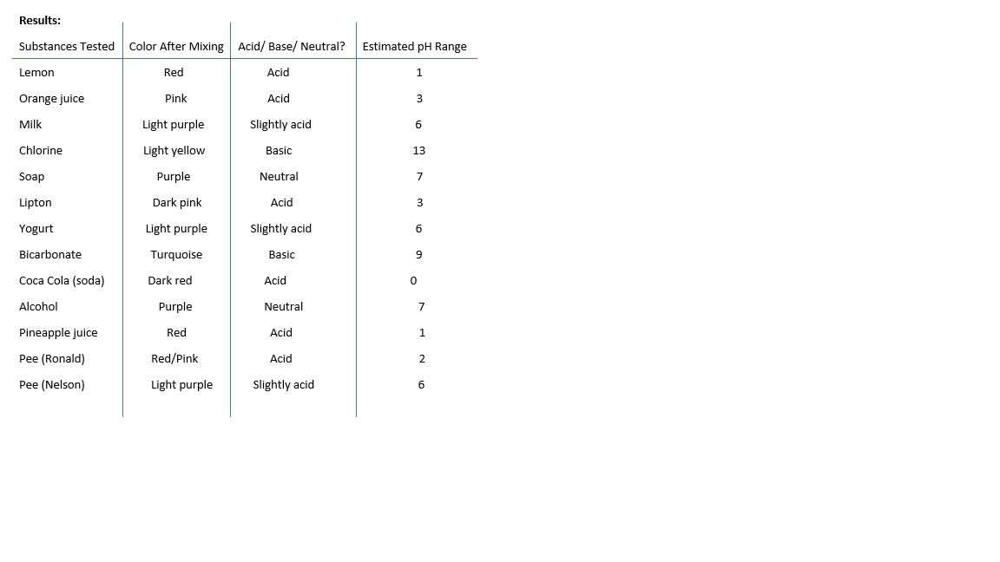

El Roble Academy
Chemistry Lab
By Alex Hernandez
Results

Conclusion
In this experiment, we clearly saw how red cabbage juice changes color when mixed with different substances, depending on their pH levels. Very acidic things like lemon juice, orange juice, Lipton tea, Coca-Cola, and Ronald's urine turned the juice red or pink, showing a low pH (0–3). Slightly acidic substances like milk, yogurt, and Nelson’s urine made it light purple, which means a pH close to 6. On the other hand, basic substances like chlorine and baking soda changed the color to yellow and turquoise, showing a high pH (9–13). Substances such as soap and alcohol stayed purple, meaning they were neutral, around pH 7. This experiment showed that red cabbage juice is a good natural way to tell if something is acidic, neutral, or basic, just by looking at the color it turns.